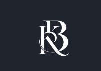

This portfolio website was designed and developed to showcase my skills, projects, and professional journey in a creative and interactive way. It highlights my background as an Electronics and Communication Engineer and my passion for technology, military aspirations, and continuous learning.
Built using HTML, CSS, and a touch of responsive design, this website serves as a living example of my front-end development capabilities. It includes animated sections, interactive project showcases, internship details, and a custom contact modal — all integrated with a clean, modern aesthetic.
Key Features:
Through this project, I demonstrated my ability to plan, design, and build a complete personal website from scratch, reflecting my dedication to continuous growth and professional presentation.
 ← Back to Portfolio